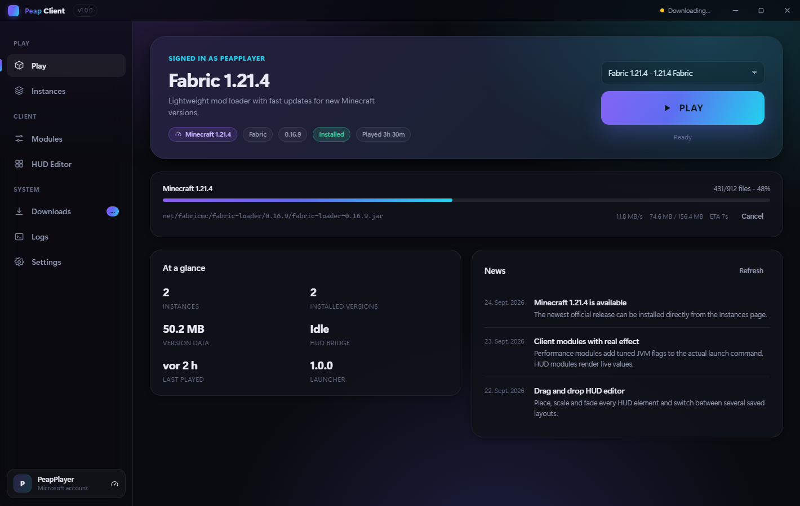

01
Setup öffnen
Doppelklick auf PeapClient-Setup.exe. Der Installer legt den Launcher an, erstellt Verknüpfungen und startet ihn.
Kostenlos · Windows 10 / 11 · Version 1.0.0
Peap Client installiert Minecraft, kümmert sich um Java und startet das Spiel — ohne Microsoft-Anmeldung, ohne Konto, ohne Abo. Name eintippen, Version wählen, spielen.
Kein Konto nötig 64-Bit · Node.js wird nicht gebraucht · Quelltext inklusive
In drei Schritten
Kein Konto anlegen, keine Java-Installation suchen, keine Konfigurationsdatei anfassen.
Doppelklick auf PeapClient-Setup.exe. Der Installer legt den Launcher an, erstellt Verknüpfungen und startet ihn.
Der Launcher schlägt deinen Windows-Namen vor. Ein Klick auf Play as … — das war die ganze Anmeldung.
Minecraft-Version und Loader aussuchen, Play drücken. Alles Weitere — Dateien, Java, Start — macht der Launcher.
Was drin ist
Alles, was ein Launcher übernehmen sollte — und ein Client-Teil, der im Spiel sichtbar wird.
Ein Offline-Profil reicht für Einzelspieler und LAN. Microsoft-Login kannst du jederzeit später hinzufügen.
Der Launcher erkennt vorhandene Java-Versionen und lädt die passende nach — 1.8 braucht eine andere als 1.21.
Vanilla, Fabric, Quilt, Forge und NeoForge. Forge und NeoForge werden mit dem offiziellen Installer eingerichtet.
Tempo, Restzeit, Abbrechen, automatische Wiederholung bei Verbindungsabbrüchen und SHA-1-Prüfung für jede Datei.
Elemente verschieben, skalieren, ein- und ausblenden. Mehrere Layouts speichern und umschalten.
Performance, HUD, Optik, Komfort und Navigation. Jedes Modul einzeln an- und ausschaltbar, mit eigenen Einstellungen.
Spiel-Log direkt im Launcher, Exit-Codes werden in verständliche Ursachen übersetzt statt in Hex-Zahlen.
Falls du dich doch anmeldest: Tokens landen verschlüsselt über Windows-DPAPI auf der Platte, nie im Klartext.
Jedes Profil hat eigenen Spielordner, eigenes RAM-Limit und eigene JVM-Argumente. Mods bleiben, wo sie hingehören.
Oberfläche
Alle Bilder unten sind direkt aus dem laufenden Launcher aufgenommen.

Client-Module
Das HUD läuft als durchklickbares Overlay über dem Spiel. Module, die Werte aus dem Spielinneren brauchen, sind als solche gekennzeichnet.
Läuft sofort, ohne Zusatz im Spiel. Position, Größe und Farbe frei einstellbar.
Der Launcher misst selbst mit und zeigt, was Minecraft gerade belegt.
Abgestimmte Garbage-Collector-Flags landen wirklich im Startbefehl — nachlesbar im Log.
Antwortzeit und Spielerzahl eines Servers, direkt über das Minecraft-Protokoll abgefragt.
Schriftgröße, Schatten, Hintergrund und Deckkraft für alle Elemente auf einmal.
Diese Werte kennt nur das Spiel selbst. Die Schnittstelle dafür ist fertig und dokumentiert; ohne Begleit-Mod zeigen die Module ehrlich „keine Daten“ statt erfundener Zahlen.
Download
Kein Bezahlbereich, keine Premium-Stufe, keine Werbung. Der komplette Quelltext liegt dem Projekt bei.
Empfohlen. Legt Startmenü-Eintrag und Verknüpfung an und lässt sich sauber deinstallieren.
PeapClient-Setup.exe 78,6 MBEine einzelne Datei, die sofort startet. Gut für USB-Sticks oder wenn du nichts installieren willst.
PeapClient.exe 78,3 MBDu siehst gerade die geteilte Web-Vorschau. Die fertigen Dateien liegen in deinem Projektordner — Pfad unten, oder die Seite aus web/ auf einen Webspace legen.
C:\Users\…\Desktop\PeapClient\dist\PeapClient-Setup.exe
Die Dateien sind nicht mit einem kostenpflichtigen Zertifikat signiert. Windows zeigt deshalb beim ersten Start eventuell eine blaue Warnung — über Weitere Informationen → Trotzdem ausführen geht es weiter. Das ist bei unsignierten Programmen normal und sagt nichts über den Inhalt aus.
Fragen